Each Unicode codepoint → sin/cos wave; sum + normalize → code_dim=512 → Linear to d_model.
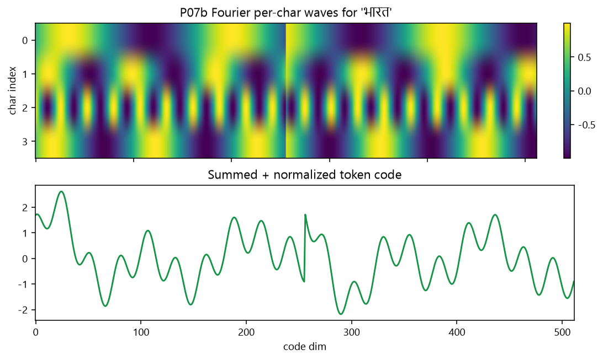
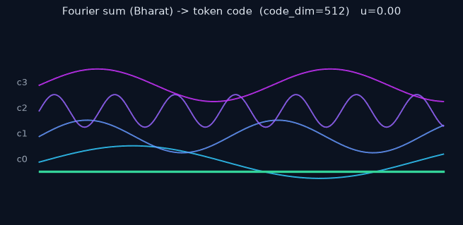
Animation: Deterministic codepoint waves compose by addition; only a shared Linear is learned — not a vocab row.
Example token: Bharat (भारत).
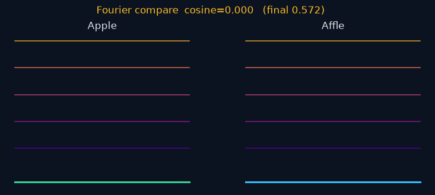
Animation: Near-spelling pairs (Apple vs Affle) stay related but not identical under the same Fourier codec — compositional structure without a table lookup. Does not claim English CE victory.
Indic UTF-8 burns Kronecker’s 32-byte window; Fourier composes on codepoints (collision groups 0 vs 1 at pos32 on our corpus).
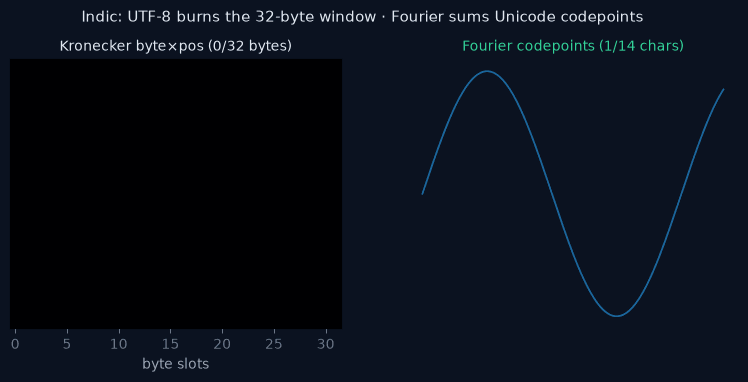
Animation: Byte×pos windows burn ~3 bytes per Devanagari character; Fourier codes on Unicode codepoints avoid that grid.
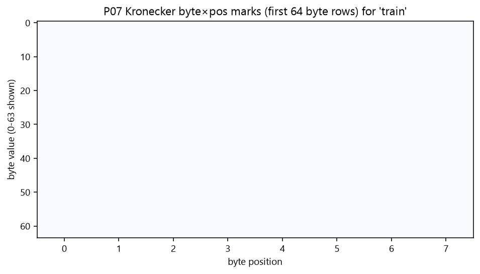
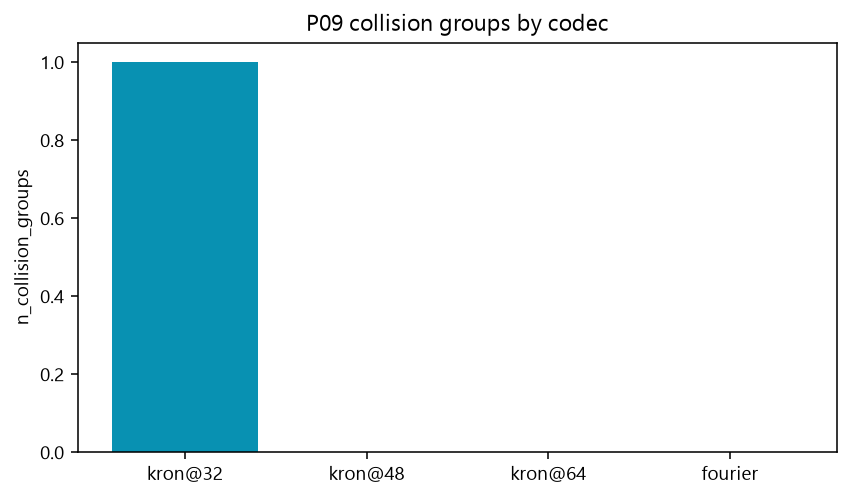
Indic wins (collisions + discrimination + hi_ce). English CE is weaker on smoke — not the Problem #4 claim.
Overall: PASS · problem_id=4 · star=fourier_canine · schema=a07.4.2
| Arm | val_ce_hi | val_ce_en | disc | params |
|---|---|---|---|---|
| dense | 0.767 | 3.019 | 1.000 | 165120 |
| kronecker | 1.028 | 1.062 | 0.833 | 263488 |
| fourier | 0.762 | 4.845 | 0.917 | 165184 |
| fourier_canine | 0.759 | 5.078 | 1.000 | 706688 |
Collisions @ Kronecker pos32: 1 group · Fourier: 0. Discrimination star 1.0 vs Kronecker 0.833.
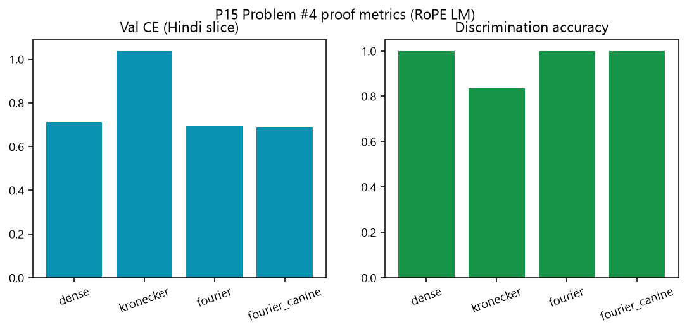
P15: Problem #4 scoreboard — Hindi CE (lower better) and discrimination accuracy. Lead here + collisions; English CE on smoke is weaker and is not the claim.
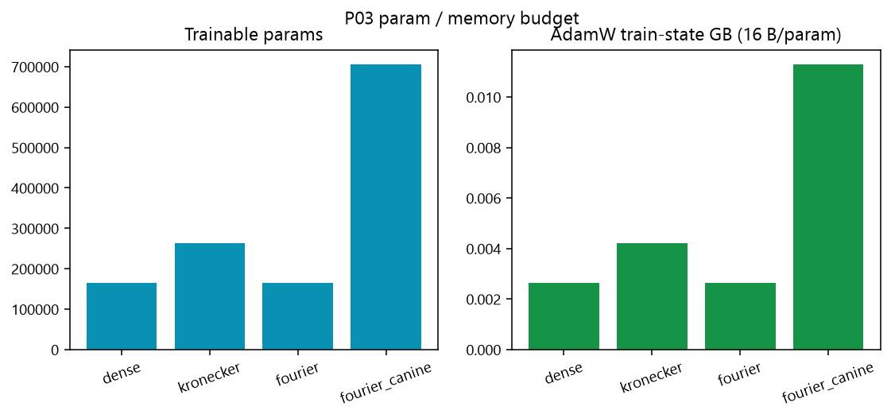
P03: Trainable params and AdamW memory by arm — compositional codecs avoid a giant vocab table, not a claim that Fourier is always the smallest smoke LM.
Circular convolution via FFT — fixed dim N (not N²). S3 math is symbolic role-filler, not Problem #1 numeric ALU.
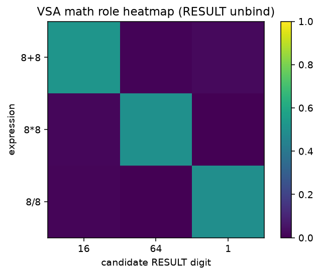
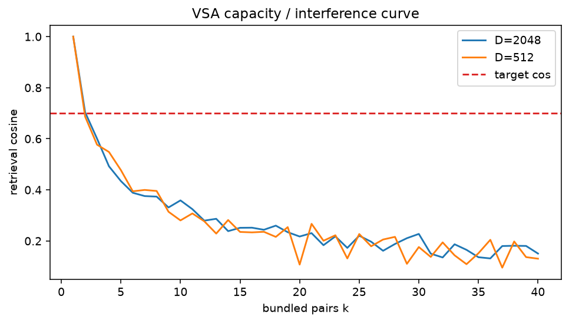
Reference: dense 131,072 × 8,096 = 1,061,158,912 input params.
Our Fourier path does not store that table — encode is deterministic f(text) then a small Linear.
The 8,096 × 131,072 shape is the output head (logits over vocab).
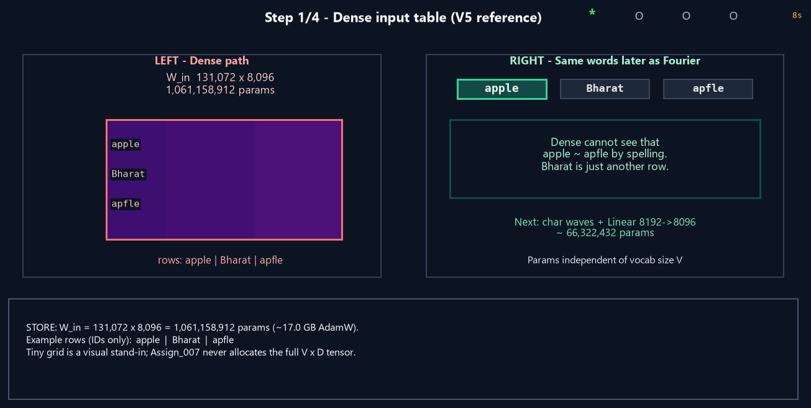
Animation: Dense gather from a stored V×D table → Fourier char-wave sum + Linear(code→D) → separate D×V head for prediction (not #4 reverse decode).
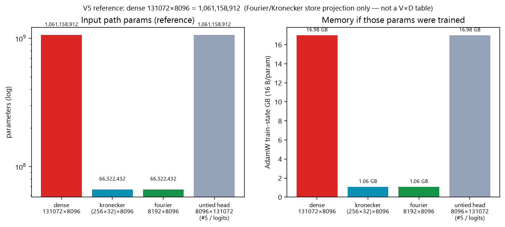
Reference accounting (no giant tensor): dense ~1.06B vs Kronecker/Fourier projections ~66M. Smoke proof still trains at V=512, D=64 — this chart is the session memory story, not our run sizes.
Store: Fourier keeps Linear(code_dim → d_model) (+ optional CANINE), not a vocab row.
Encode: Unicode waves → sum → z-norm → project → emb ∈ RD.
Head / “invert”: D×V logits ≠ recovering characters from the embedding (that is #5).